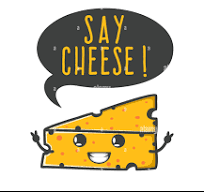
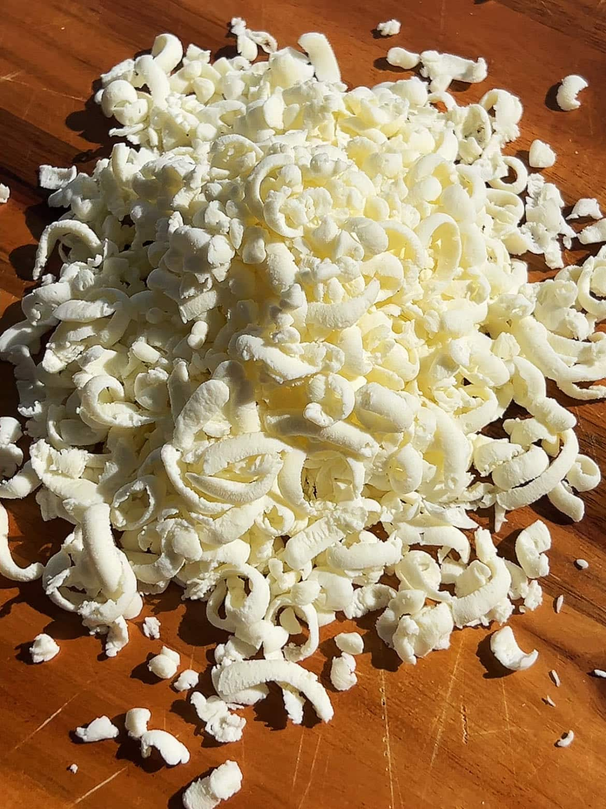
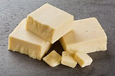

Chedder Cheese, Goat Cheese, Cottage Cheese, and Mozzeralla Cheese. Cheese is used worldwide and is used for many different reasons. But, the use of cheese is mainly known for pizza.

Mozarella Cheese
The most common and most popular type of cheese is mozarella cheese. This cheese is made from the molten curd which is cut, molded, and firmed by immersing it in cold water or brine. The cheese is then baked in a hot oven until it is melted and bubbly. Mozzarella is used for most types of pizza and several pasta dishes or served with sliced tomatoes and basil in Caprese salad. Suprisingly, mozarella cheese can be known to keep your teeth healthy and mantain strong bones.

Chedder Cheese
Another very popular type of cheese would be Chedder Cheese, a personal favorite It originated in the English village of Chedder in England, more than 800 years ago, and has gained its popularity since. Chedder Cheese is not only used in grilled cheese and in cheeseburgers, but it also goes well with fruits, wines, and gournment recipes. It is a very good source of calcium and protein, making it very nutritious. It adds a creamy and tangy taste to foods, which is why many people enjoy it. Chedder undergoes a process called cheddaring. During cheddaring, the curds are stacked and turned multiple times to release whey and develop a firmer texture. Whey is

What is the most popular type of cheese?
Which of the following is false?
What makes aged cheese different from normal cheese?